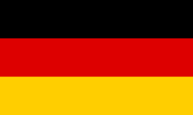

‹Studiază în Germania 
Germania este destinația ideală pentru a studia în străinătate: educație de clasă mondială, viață urbană interesantă înconjurată de peisaje frumoase și o cultură primitoare cu oameni din întreaga lume.
Germanii numesc într-un fel ironic propria lor țară "țara poeților și gânditorilor". Cu toate acestea: Există în jur de 400 de instituții de învățământ superior în Germania, multe dintre acestea oferind programe de studiu în limba engleză - în total aproximativ 1.000. Multe universități germane se clasează în topurile internaționale.
Nu numai că poți să te aștepți la o educație de clasă mondială când studiezi în Germania. La majoritatea universităților, chiar este gratuită. Așa este: Indiferent din ce țară vii, majoritatea școlilor își oferă educația complet gratuită. Există, desigur, câteva excepții: în principal școli private sau programe de studiu pentru studenți cu experiență profesională anterioară. Bine de știut: Dacă decizi să rămâi și să lucrezi în Germania după absolvire, poți deduce adesea taxele de școlarizare anterioare din impozitul pe venit.
Costurile de trai în Germania sunt relativ modeste în comparație cu alte națiuni din Europa Occidentală. În medie, studenții pot supraviețui cu 800 de euro pe lună.
Chiriile în anumite zone metropolitane, cum ar fi Hamburg sau München, pot fi ridicate, deși în niciun caz comparabile cu orașe precum Paris sau Londra, mai ales cu o anumită flexibilitate în ceea ce privește zona în care să locuiești.